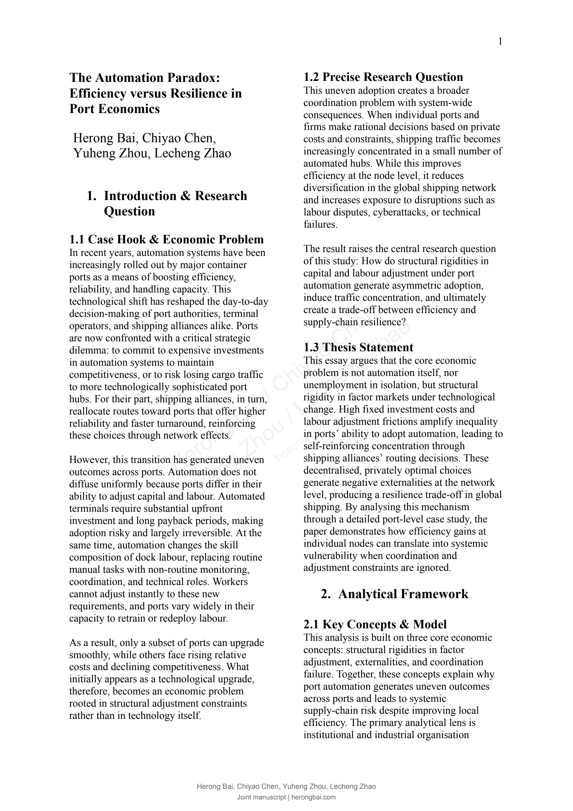

Team case-study manuscript
The Automation Paradox: Efficiency versus Resilience in Port Economics
7 pages · English original
The complete manuscript, with its original layout and color figures retained and a joint-author watermark added.
Chiyao Chen Harrow AppiYuheng Zhou 成都天府中学Lecheng Zhao 深国交
Open the complete PDF ↗Page 1 / 7

Select a page above, or tap the page to view it at full size. The complete PDF retains searchable text.
This page image could not be loaded. Open the complete PDF instead ↗